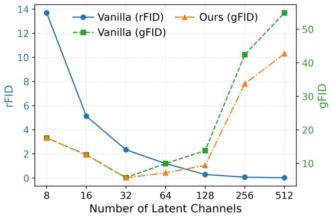

Figureure 5 · Overview of FreqWarmFigure 5. Overview of FreqWarm. We filter out high-frequency components above a frequency threshold $r _ { 0 }$ in the RGB space. The filtered images are forwarded into a pretrained autoencoder. We train diffusion models or flow matching models on top of the latent space in the early training stage for warm-up. Note that the autoencoder is kept frozen throughout training in our method.这张图概括 Toward Diffusible High-Dimensional Latent Spaces 的整体方法流程。阅读时先看模块之间传递的训练信号，再看作者如何把目标拆成可优化的子问题。

Figureure 1 · Trade-off between reconstruction and generationFigure 1. Trade-off between reconstruction and generation. Reconstruction is evaluated by FID between input images and reconstructed images (i.e., rFID). Generation is evaluated by the FID between synthetic images and real images (i.e., gFID). Lower rFID and gFID indicate the better performance. The spatial compression ratio remains 32 for all experiments.这张图/表用于判断 Toward Diffusible High-Dimensional Latent Spaces 的实验收益来自哪里。重点看替换、消融或跨模型设置下趋势是否一致，而不是只看单个最高分。